61 CAMPUS PLANTS
校園植物觀察
前 12 組五欄圖版各對應 5 張植物卡，第 13 組為單種特寫。圖版用來比較外形，名稱判斷仍要回到實物的葉序、葉形、花果與生長型。
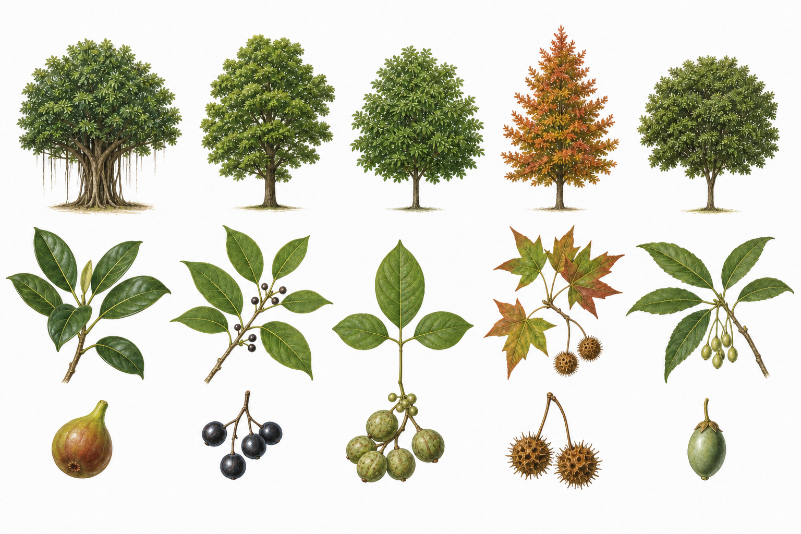
- 01
榕樹
Ficus microcarpa看：灰色樹幹、下垂氣生根、橢圓革質葉。
果：小型隱花果，熟時紅紫，常吸引鳥。
氣生根線索 - 02
樟樹
Cinnamomum camphora看：葉常見三出脈，脈腋有小腺窩。
果：黑色球形核果，下方有杯狀托。
三出脈線索 - 03
茄苳
Bischofia javanica看：一片複葉由 3 枚小葉組成，小葉有鋸齒。
果：小圓果成串，成熟色澤轉深。
三出複葉 - 04
楓香
Liquidambar formosana看：多為三裂葉，秋冬可轉黃紅。
果：刺球狀聚合果，乾後留在枝頭或落地。
三裂葉 - 05
杜英
Elaeocarpus sylvestris看：細鋸齒葉，老葉轉紅後散落。
果：橢圓核果，成熟可呈暗藍黑色。
紅色老葉
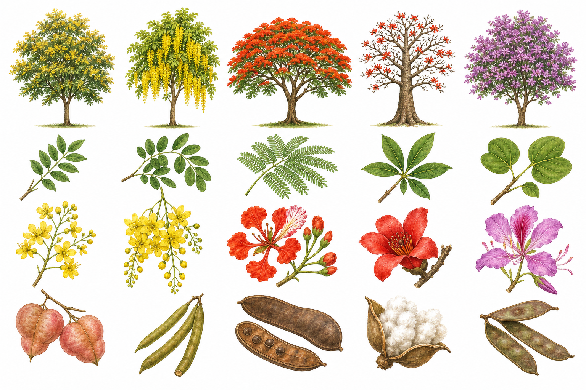
- 06
臺灣欒樹
Koelreuteria henryi看：羽狀複葉，秋季黃花成大型圓錐花序。
果：三裂膨大蒴果由粉紅轉褐，內有黑色圓種子。
臺灣特有種 - 07
阿勃勒
Cassia fistula看：成串黃花向下垂，偶數羽狀複葉。
果：長圓筒形黑褐莢果，常高掛枝上。
垂掛黃花 - 08
鳳凰木
Delonix regia看：細密二回羽狀複葉，樹冠扁傘形，花橙紅。
果：大型扁平木質莢果。
蕨狀複葉 - 09
木棉
Bombax ceiba看：掌狀複葉；落葉期可見大型紅花。
果：蒴果裂開露出白色棉毛與黑色種子。
掌狀複葉 - 10
羊蹄甲
Bauhinia purpurea看：葉端深裂成兩瓣，像羊蹄；花紫紅。
果：扁平莢果，成熟乾裂。
二裂葉
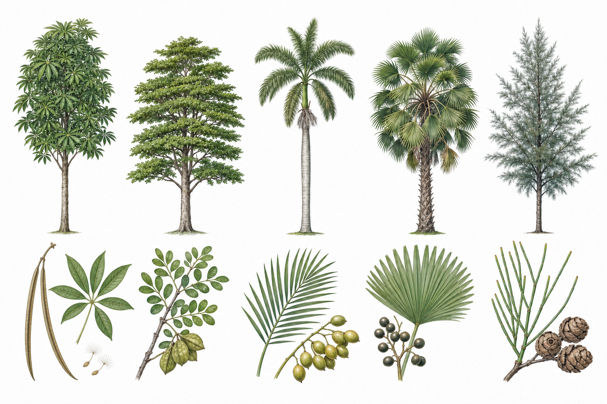
- 11
黑板樹
Alstonia scholaris看：葉片數枚輪生，側脈密而平行感明顯。
果：成對細長蓇葖果，種子具毛；折傷會流乳汁。
只看不採 - 12
小葉欖仁
Terminalia mantaly看：枝條水平分層，許多小葉聚在枝端。
果：小型橢圓核果，成熟顏色轉深。
層狀樹冠 - 13
大王椰子
Roystonea regia看：灰白光滑高幹，頂端羽狀葉形成樹冠。
果：小型圓果成串；勿停留在可能掉落的老葉下。
留意落葉 - 14
蒲葵
Livistona chinensis看：大型掌狀扇葉，裂片末端常下垂。
果：橢圓或近球形，成熟呈藍黑色。
扇形葉 - 15
木麻黃
Casuarina equisetifolia看：綠色細枝有明顯節，真正葉片退化成節上小鱗片。
果：木質毬果狀果序，內含有翅小果。
節狀綠枝
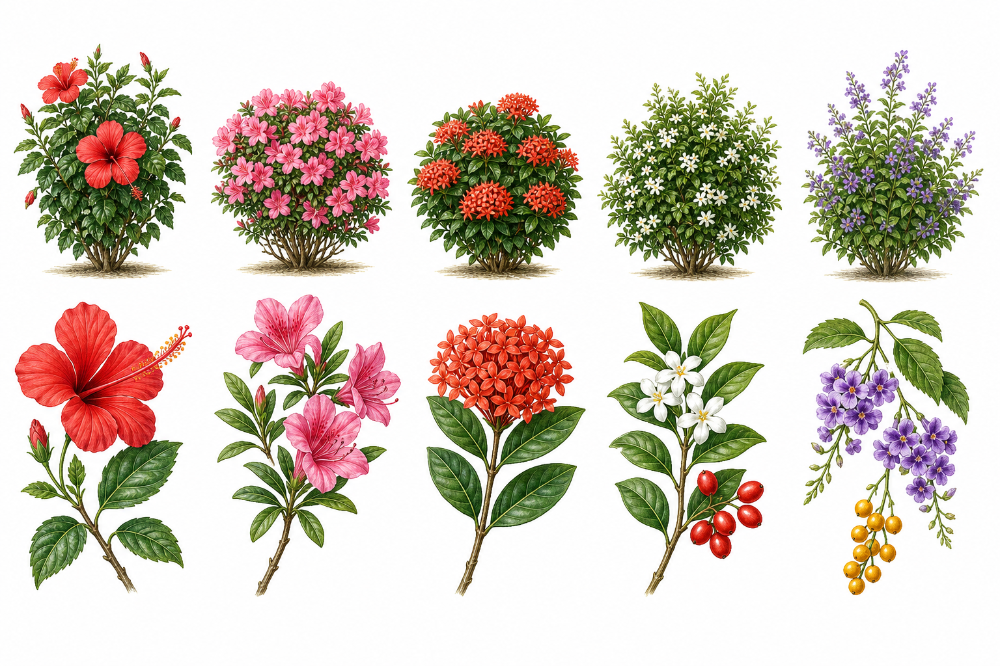
- 16
朱槿
Hibiscus rosa-sinensis看：互生鋸齒葉，大花中央有伸出的雄蕊筒。
果：園藝品種不一定結果，以花部為主要線索。
長雄蕊筒 - 17
杜鵑
Rhododendron simsii看：枝端葉密集，漏斗狀花，花瓣常有斑點。
果：乾燥蒴果；植株不可食用。
只看不採 - 18
矮仙丹
Ixora chinensis看：對生厚葉，許多四瓣小花聚成圓頂花序。
果：小型漿果狀核果，熟時色深。
四瓣密花 - 19
月橘
Murraya paniculata看：羽狀複葉有 3–9 枚小葉，白花芳香。
果：橢圓形紅果，常可見留在綠籬上。
白花紅果 - 20
黃金露花
Duranta erecta看：葉多對生，淡紫花成下垂花序。
果：黃橙色圓果有毒，不可撿玩或食用。
果實有毒
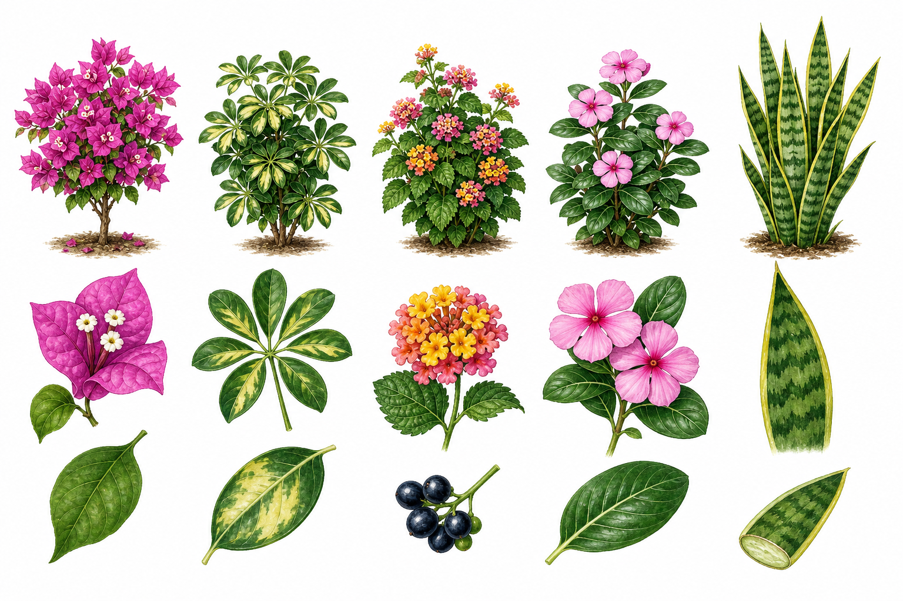
- 21
九重葛
Bougainvillea glabra看：鮮色紙質部分是苞片，小花在中央；枝條有刺。
果：小型瘦果不醒目。
枝條有刺 - 22
鵝掌藤
Heptapleurum arboricola看：掌狀複葉，小葉像傘骨從一點伸出。
果：小果成串；汁液可能刺激皮膚。
不折枝 - 23
馬纓丹
Lantana camara看：對生粗糙葉，頭狀花序常同時有多種顏色。
果：熟果轉深色；全株不供食用。
只看不採 - 24
長春花
Catharanthus roseus看：對生亮葉，五瓣花像旋轉風車。
果：常成對細長蓇葖果；植株有毒。
植株有毒 - 25
虎尾蘭
Dracaena trifasciata看：劍形肉質葉直立，有深淺橫紋，地下有根莖。
果：栽培環境少見結果；不可食用。
只看不採
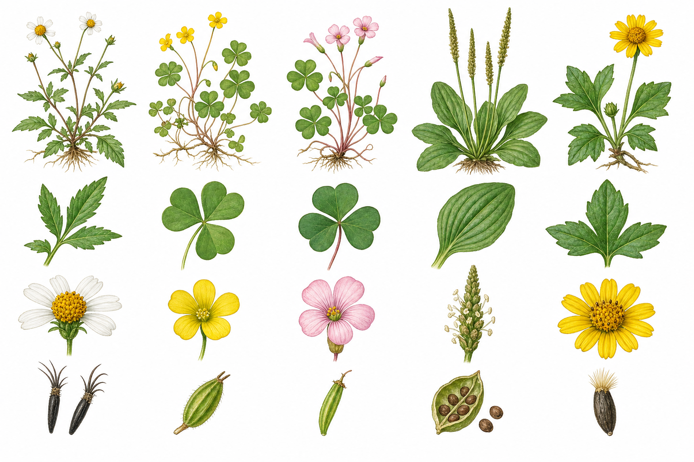
- 26
大花咸豐草
Bidens pilosa var. radiata看：白色舌狀花圍著黃色花心，葉片具鋸齒。
果：黑色瘦果末端有倒鉤，容易黏在衣物。
倒鉤種子 - 27
酢漿草
Oxalis corniculata看：三枚心形小葉，小黃花，常匍匐生長。
果：細長蒴果成熟會彈散種子。
黃花三小葉 - 28
紫花酢漿草
Oxalis debilis看：同樣三枚心形小葉，但花較大、粉紫色。
果：小型蒴果；地下常有鱗莖狀構造。
粉花三小葉 - 29
車前草
Plantago asiatica看：葉從基部成蓮座狀，數條粗脈由葉基走向葉尖。
果：小花與蒴果排列在直立穗上。
基生蓮座 - 30
蟛蜞菊
Sphagneticola trilobata看：對生葉常三裂，黃色頭狀花，莖貼地延伸。
果：小型乾果；斷莖也容易繁殖，不要帶離現場。
不採不散播
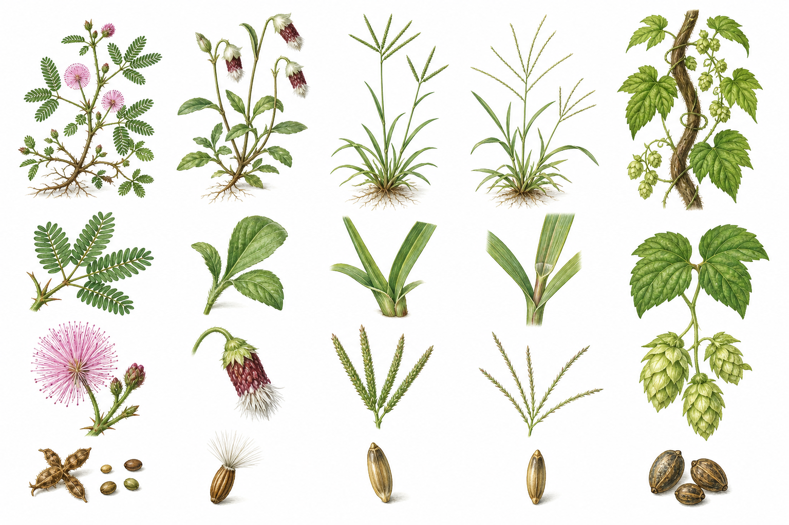
- 31
含羞草
Mimosa pudica看：二回羽狀複葉，受碰觸會合攏，粉紅球狀花。
果：扁莢果邊緣有毛刺。
莖有刺 - 32
昭和草
Crassocephalum crepidioides看：柔軟葉互生，紅褐色筒狀花序常下垂。
果：瘦果有白色冠毛，可隨風散播。
白色冠毛 - 33
牛筋草
Eleusine indica看：植株基部扁平呈放射狀，穗像幾根粗手指。
果：細小穎果排列在穗上。
扁平指狀穗 - 34
馬唐
Digitaria ciliaris看：細長葉與明顯節，數枚纖細總狀花序從頂端伸出。
果：小穎果隨小穗成熟。
纖細指狀穗 - 35
葎草
Humulus scandens看：對生掌狀裂葉，莖會纏繞並有粗糙倒刺。
果：雌花序成熟呈下垂毬果狀。
粗糙會刮手
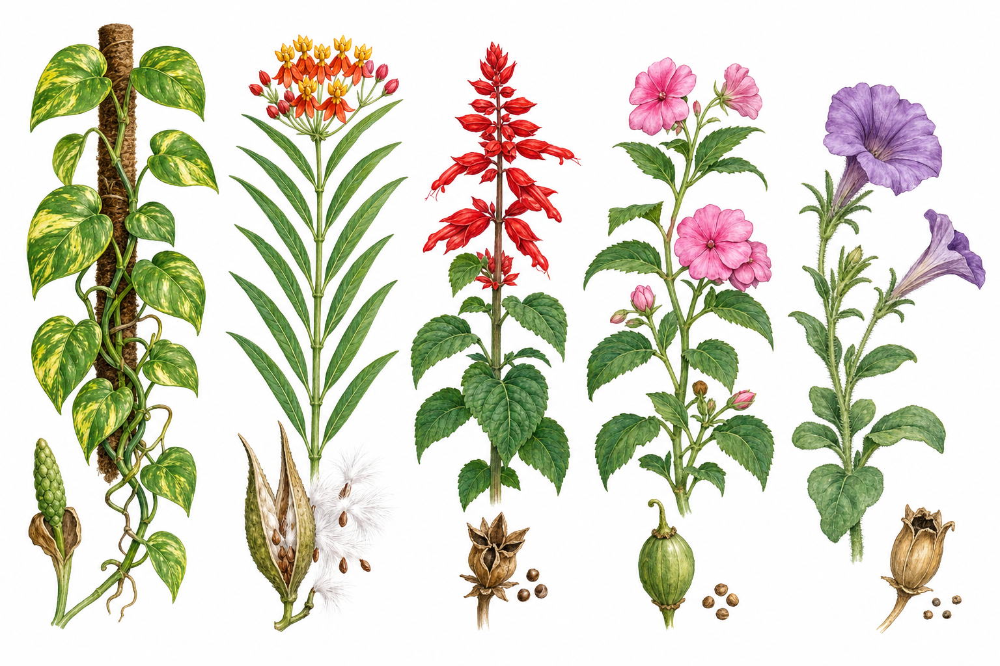
- 36
黃金葛
Epipremnum aureum看：心形斑葉、攀附莖與氣生根。
果：栽培環境很少開花結果；汁液含刺激性結晶。
不可食用 - 37
馬利筋
Asclepias curassavica看：對生狹長葉，橙紅黃相間的花，折傷有乳汁。
果：蓇葖果裂開釋出帶白色絹毛的種子。
乳汁有毒 - 38
一串紅
Salvia splendens看：對生葉、方形莖，紅花沿花軸排列。
果：花萼內形成 4 枚小堅果。
方形莖 - 39
非洲鳳仙花
Impatiens walleriana看：肉質莖、鋸齒葉，花後方有距。
果：成熟蒴果會彈裂，僅在教師指導下觀察。
彈裂蒴果 - 40
矮牽牛
Petunia × atkinsiana看：葉與莖有黏毛，花冠漏斗狀、色彩多樣。
果：小蒴果內有許多細小種子。
漏斗狀花
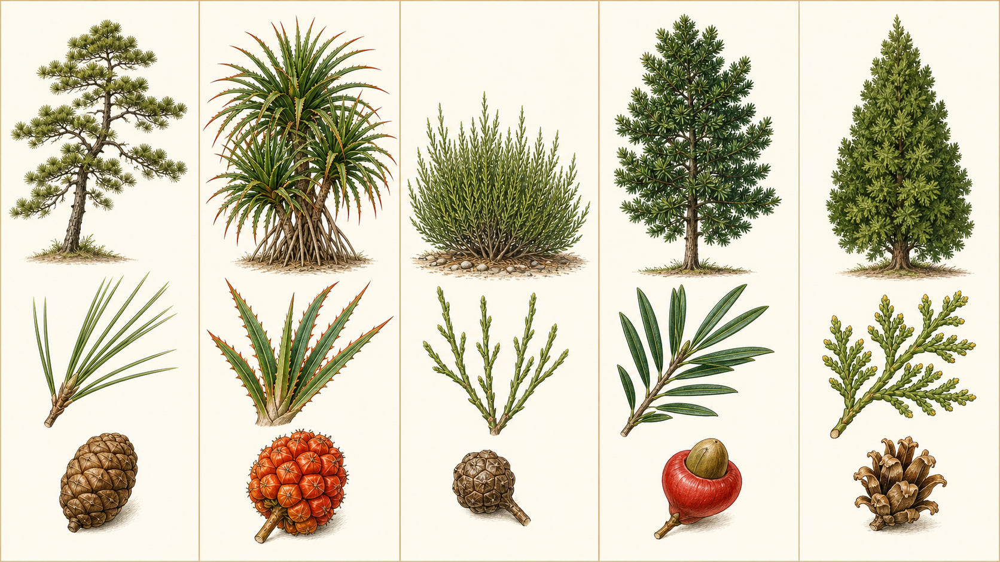
- 41
琉球松
Pinus luchuensis看：常綠喬木，細長針葉多為兩針一束，樹冠較疏朗。
果：木質毬果卵形，鱗片成熟後張開散出有翅種子。
兩針一束 - 42
紅刺露兜樹
Pandanus utilis看：長葉螺旋排列，葉緣與中肋有紅橙色刺，基部可見支柱根。
果：橙紅色聚合果像鳳梨；原列名「紅刺肉兜樹」應為本名。
葉緣有刺 - 43
千頭木麻黃
Casuarina nana看：低矮多分枝灌木；細直綠枝有節，真正葉片退化成節上小齒。
果：圓至長橢圓的木質毬果狀果序，內有帶翅小果。
低矮節狀枝 - 44
羅漢松
Podocarpus macrophyllus看：葉線形、革質而全緣，常密集排列在枝上。
果：種子坐在紅色肥厚種托上，外形像戴帽的小人；不要試吃。
只看不採 - 45
側柏
Platycladus orientalis看：小枝扁平展開，細小鱗葉緊貼枝條，樹形常呈圓錐狀。
果：木質毬果由數枚厚鱗片組成，鱗片頂端有小突起。
扁平鱗葉
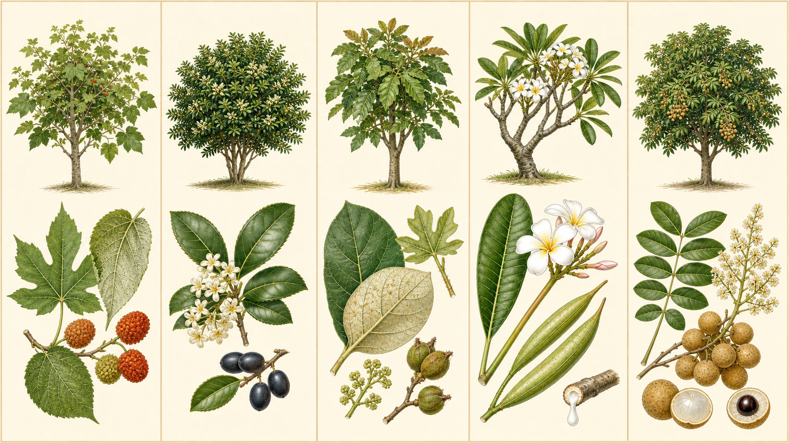
- 46
構樹
Broussonetia papyrifera看：互生葉粗糙，幼株葉片常深裂，葉背灰白而有毛。
果：雌株結橙紅色球形聚合果，成熟時許多小果突出。
葉形多變 - 47
桂花
Osmanthus fragrans看：對生革質葉，葉緣常有細齒；乳白小花成簇且香味明顯。
果：橢圓核果成熟轉紫黑，在校園栽培株不一定常見。
細花濃香 - 48
蟲屎
Melanolepis multiglandulosa看：互生寬葉，幼葉可有 3–5 裂；嫩枝與葉背具黃褐色星狀毛。
果：小型蒴果常三裂，與細小花序同樣不醒目。
星狀毛線索 - 49
緬梔
Plumeria rubra看：粗壯多肉枝，長葉聚在枝端；花白黃或粉紅且芳香。
果：常成對細長蓇葖果；折傷乳汁會刺激皮膚。
乳汁刺激 - 50
龍眼
Dimocarpus longan看：偶數羽狀複葉，小葉狹橢圓而革質；小花成大型圓錐花序。
果：黃褐圓果成串，剝開可見半透明果肉與黑亮種子。
黑亮圓種子
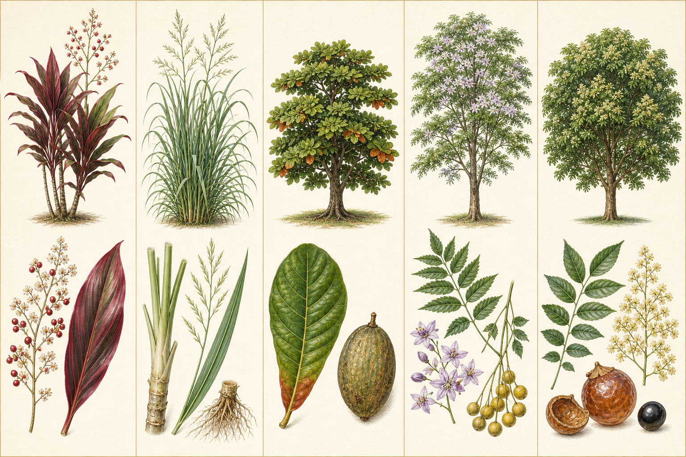
- 51
千年木
Cordyline fruticosa看：寬長葉聚生在直立莖端，園藝品種常有紅、紫、綠色條紋。
果：細小花成分枝花序，之後可結紅色漿果。
彩色帶狀葉 - 52
香茅
Cymbopogon nardus看：多年生叢生草本，葉片細狹長、葉鞘互相抱合，搓揉有香氣。
花：成熟植株可抽出分枝花序，但栽培環境較少開花。
芳香叢生草 - 53
大葉欖仁
Terminalia catappa看：枝條水平分層，大型倒卵形葉聚在枝端，老葉可轉紅。
果：橢圓而略扁的纖維質核果，成熟由綠轉黃紅。
大葉層狀樹冠 - 54
苦楝
Melia azedarach看：二至三回羽狀複葉，春季淡紫色星形花成簇。
果：黃色圓形核果常成串留在落葉枝頭；有毒不可食。
果實有毒 - 55
無患子
Sapindus mukorossi看：偶數羽狀複葉，小葉全緣；淡黃小花成大型分枝花序。
果：黃褐至琥珀色圓果包著黑種子，果皮含皂素不供試吃。
不揉眼口
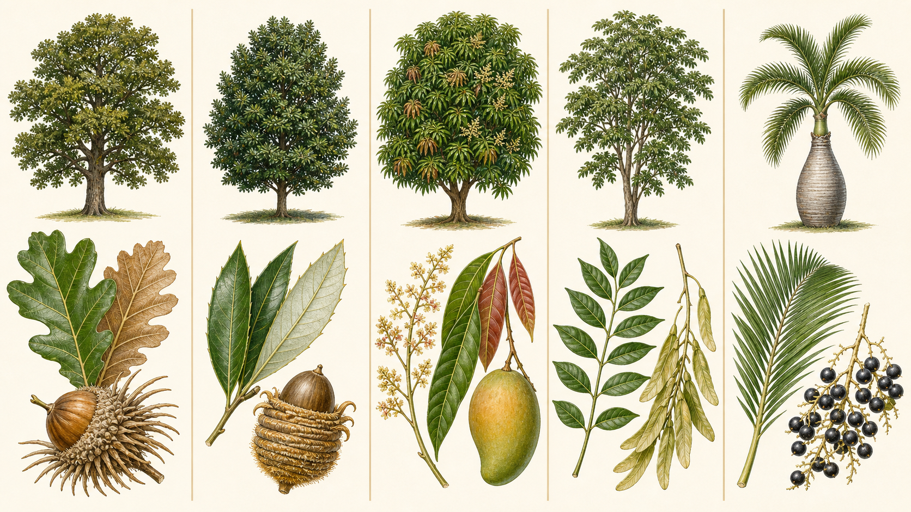
- 56
槲櫟（槲樹）
Quercus dentata看：大型倒卵形葉有深而圓鈍的裂片，葉背具褐色星狀毛。
果：橡實較大，殼斗外側的狹長鱗片常向外伸展。
大圓裂葉 - 57
捲斗櫟
Quercus pachyloma看：革質葉披針至長橢圓形，葉背灰白，先端可見疏齒。
果：殼斗有 8–10 圈環狀鱗片與金黃絨毛，邊緣常反捲。
環紋捲殼斗 - 58
芒果
Mangifera indica看：單葉互生、狹長而革質，嫩葉常紅褐；小花成圓錐花序。
果：大型核果由綠轉黃紅；乳汁與果皮可能使敏感者不適。
不碰乳汁 - 59
光蠟樹
Fraxinus griffithii看：葉對生，奇數羽狀複葉由多枚狹卵形小葉組成。
果：扁長翅果成串，成熟後可隨風旋轉散播。
對生羽狀葉 - 60
酒瓶椰子
Hyophorbe lagenicaulis看：灰色樹幹基部至中段膨大如酒瓶，頂端為羽狀葉冠。
果：小型果實成串，成熟轉黑；勿停留在可能掉落的老葉下。
留意落葉
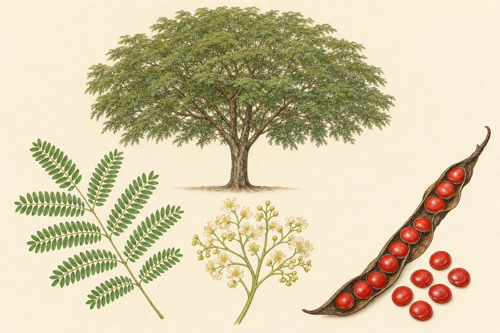
- 61
大實孔雀豆（孔雀豆）
Adenanthera pavonina看：喬木，葉為二回羽狀複葉；黃白色小花在枝端排成花序。
果：狹長鐮刀狀莢果成熟後扭轉開裂，露出較大而鮮紅光亮的種子。
種子不可入口